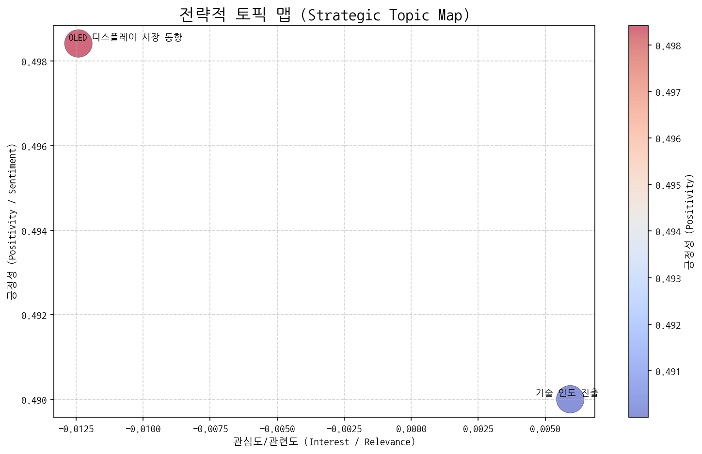
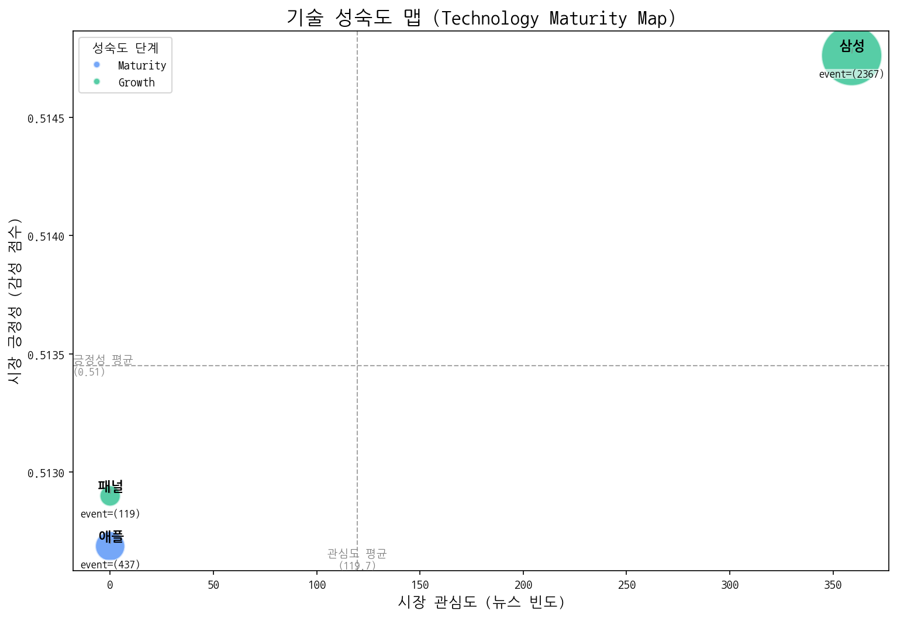
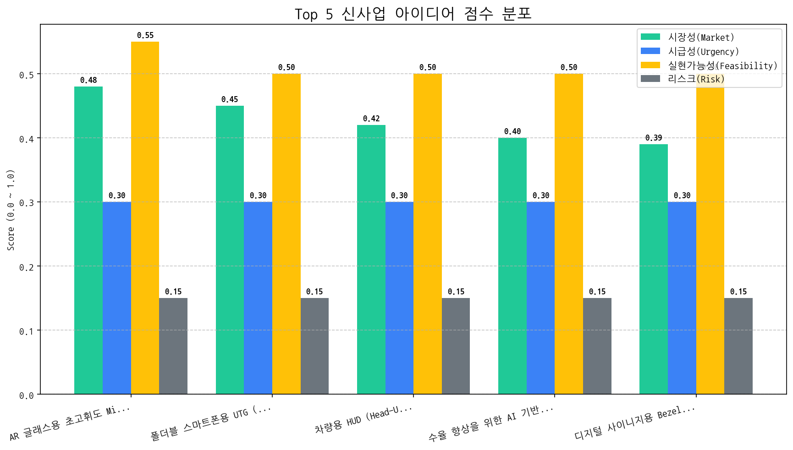

| 토픽명 | 요약 | 핵심 키워드 | |:-----------------|:---------------------------------------------------------------------------------------------|:----------------| | 기술 인도 진출 | 삼성전자를 중심으로 AI, 반도체, LED 기술과 전기차, 화장품 브랜드 등이 인도 시장에 진출하는 동향을 다룬 내용입니다. MINI 전기차도 포함되어 있습니다. | ai, 기술, 반도체 | | OLED 디스플레이 시장 동향 | 중국의 OLED 디스플레이 패널 판매량이 증가하고, 미국 시장에서도 판매가 이루어지는 등 OLED 디스플레이 사업의 3분기 동향을 다룸. 2O 기술 관련 내용 포함. | oled, 디스플레이, 동기 |
| 기술 | 단계 | 판단 근거 | |:-----|:---------|:----------------------------------------------------------------------| | 애플 | Maturity | 신규 출시가 꾸준히 발생하지만 투자 건수가 압도적으로 많고, 뉴스 언급 빈도가 낮아 이미 성숙기에 접어든 기술로 판단됩니다. | | 삼성 | Growth | 활발한 출시와 투자 활동이 나타나고 뉴스 언급 빈도가 높아 시장에서 성장 단계에 있는 것으로 판단됩니다. | | 패널 | Growth | 뉴스 언급은 낮지만, 출시 이벤트가 투자 및 수주 이벤트에 비해 압도적으로 높아 시장 성장기에 진입한 것으로 판단됩니다. |
| 아이디어 | 가치 제안 | 총점 | |:-------------------------------------------------|:------------------------------------------------------------------------------------------------------------------------------------------------|-----:| | AR 글래스용 초고휘도 Micro-OLED 마이크로 디스플레이 | 기존 LCD/OLED 대비 압도적인 밝기 (10,000 nits 이상) 및 해상도 (4K 이상) 제공. 초소형 사이즈로 AR 글래스 디자인 자유도 향상. 낮은 전력 소비로 AR 글래스 사용 시간 극대화. | 3.7 | | 폴더블 스마트폰용 UTG (Ultra Thin Glass) 일체형 벤더블 OLED 패널 | UTG와 OLED 패널 일체화로 내구성 2배 향상 및 주름 현상 최소화. 얇고 가벼운 디자인 구현으로 폴더블폰 휴대성 극대화. 경쟁사 대비 우수한 벤딩(bending) 성능으로 다양한 폴더블 폼팩터 지원. | 3.5 | | 차량용 HUD (Head-Up Display) 투명 MicroLED 패널 | 기존 LCD 대비 압도적인 밝기, 명암비, 시야각을 제공하여 주간/야간 어떤 환경에서도 선명한 정보 제공. MicroLED의 높은 투명도를 활용, HUD가 꺼진 상태에서도 운전자의 시야를 방해하지 않음. 증강현실(AR) 정보 표시 지원으로 운전 경험 혁신. | 3.4 | | 수율 향상을 위한 AI 기반 OLED 증착 공정 최적화 서비스 | AI 기반 실시간 공정 데이터 분석 및 최적화. 기존 대비 OLED 증착 공정 수율 5% 이상 향상. 불량 예측 및 사전 예방으로 생산 비용 절감. 숙련된 엔지니어의 컨설팅 서비스 제공. | 3.3 | | 디지털 사이니지용 Bezelless (Zero-Gap) MicroLED 모듈 | 모듈 간 완벽한 연결로 베젤 없는 대형 화면 구현. 뛰어난 화질 (HDR, 고해상도) 및 넓은 시야각 제공. 긴 수명 및 낮은 유지보수 비용으로 총 소유 비용 절감. | 3.3 || Hypothesis | Target | KPI | Owner | Due |
|---|---|---|---|---|
| 북미 빅테크 기업(메타, 애플, 구글)은 10,000 nits 이상의 밝기와 4K 해상도를 제공하는 Micro-OLED 마이크로 디스플레이에 대해 상당한 구매 의향을 가지고 있다. | 메타, 애플, 구글의 AR 글래스 개발 담당 부서의 기술 책임자 또는 구매 담당자 3명 이상 인터뷰 | 인터뷰 대상 3명 중 2명 이상에게서 제품에 대한 긍정적인 피드백 및 NDA 체결 의사 확인 | 사업개발팀 | 2025-11-02 |
| 현재 기술 수준으로 10,000 nits 이상의 밝기를 가지는 Micro-OLED 마이크로 디스플레이의 시제품 제작이 2주 이내에 가능하다. | 디스플레이 개발팀 내부 기술 검토 회의 및 시뮬레이션 | 현재 보유 기술 및 추가적인 기술 개발 필요성, 예상 개발 기간 및 비용에 대한 상세 보고서 작성 완료 | 기술기획팀 | 2025-11-02 |
| 경쟁사(예: eMagin, Kopin)의 MicroLED 기반 마이크로 디스플레이 기술 개발 동향 분석 결과, Micro-OLED 기반 솔루션이 특정 성능 지표(예: 전력 효율, 생산 비용)에서 경쟁 우위를 점할 수 있다. | 경쟁사 기술 동향 조사 및 MicroLED vs Micro-OLED 기술 비교 분석 보고서 작성 | 경쟁사 기술 분석 보고서 및 자사 Micro-OLED 기술의 차별점 및 경쟁 우위 요소 분석 완료 | 마케팅팀 | 2025-11-02 |